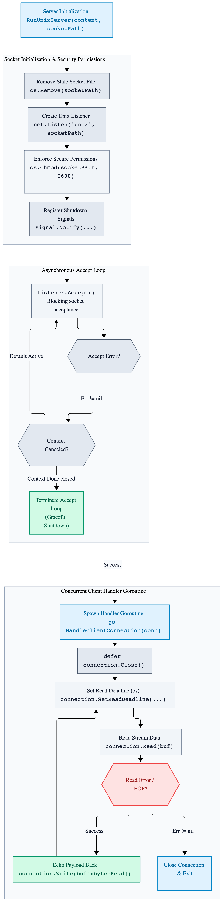
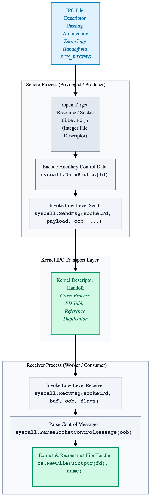
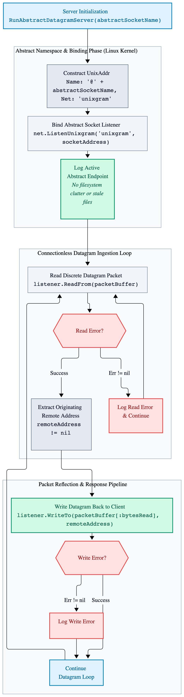
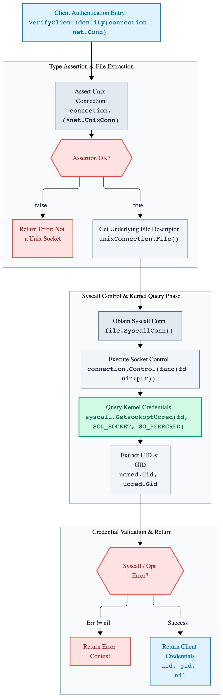
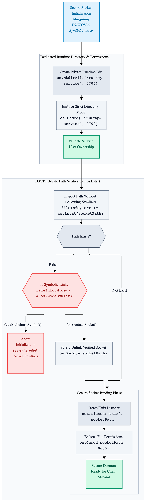

Low-Level IPC & Unix Domain Sockets
Welcome to Chapter 8 of the Go Systems Blueprint. Building upon the advanced networking programming patterns examined in Chapter 7, inter-process communication (IPC) on Unix systems provides ultra-low-latency channels bypassing the network stack.
This chapter covers Unix domain socket listeners, ancillary file descriptor passing via SCM_RIGHTS,
Linux abstract namespaces, datagram UNIX sockets, peer credential authentication, and security hardening.
8.1 Unix Domain Socket Server & Client Implementation
Unix domain sockets present a standard stream-oriented interface via net.Conn and net.Listener,
allowing developers to reuse existing network abstractions. However, unlike TCP ports, Unix sockets persist as files
on the local file system and require explicit cleanup and permission enforcement.
package main
import (
"context"
"errors"
"fmt"
"io"
"log"
"net"
"os"
"os/signal"
"sync"
"syscall"
"time"
)
// UnixSocketServer manages a Unix domain socket listener, active client goroutines, and graceful shutdowns.
type UnixSocketServer struct {
socketPath string
listener net.Listener
waitGroup sync.WaitGroup
}
// NewUnixSocketServer prepares a Unix domain socket server with safe stale-socket cleanup and strict permissions.
func NewUnixSocketServer(socketPath string) (*UnixSocketServer, error) {
// Defensively check that the socket file path is not empty.
if socketPath == "" {
return nil, errors.New("error: socket path cannot be empty")
}
// Inspect existing path metadata without following symlinks to avoid unlinking non-socket files.
fileInfo, statError := os.Lstat(socketPath)
if statError == nil {
// Ensure the existing entry is a Unix socket before removing it.
if fileInfo.Mode()&os.ModeSocket == 0 {
return nil, fmt.Errorf("error: path %s already exists and is not a unix socket", socketPath)
}
// Remove the stale Unix socket file left over from a prior run.
if removeError := os.Remove(socketPath); removeError != nil {
return nil, fmt.Errorf("failed to remove stale socket file %s: %w", socketPath, removeError)
}
} else if !errors.Is(statError, os.ErrNotExist) {
return nil, fmt.Errorf("failed to inspect socket path %s: %w", socketPath, statError)
}
// Bind a stream-oriented Unix domain socket listener.
unixListener, listenError := net.Listen("unix", socketPath)
if listenError != nil {
return nil, fmt.Errorf("failed to listen on unix socket %s: %w", socketPath, listenError)
}
// Restrict socket access to the owner only.
if chmodError := os.Chmod(socketPath, 0600); chmodError != nil {
unixListener.Close()
os.Remove(socketPath)
return nil, fmt.Errorf("failed to set permissions on socket %s: %w", socketPath, chmodError)
}
return &UnixSocketServer{
socketPath: socketPath,
listener: unixListener,
}, nil
}
// Serve accepts incoming client connections until context cancellation or listener closure.
func (server *UnixSocketServer) Serve(serverContext context.Context) error {
// Defensively check that the server instance and its listener are initialized.
if server == nil || server.listener == nil {
return errors.New("error: unix socket server or listener cannot be nil")
}
// Defensively check that the server context is not nil.
if serverContext == nil {
return errors.New("error: server context cannot be nil")
}
// Close the listener automatically when the parent context is canceled.
context.AfterFunc(serverContext, func() {
_ = server.listener.Close()
})
// Ensure the socket file is cleaned up once the accept loop exits.
defer func() {
_ = server.listener.Close()
server.waitGroup.Wait()
_ = os.Remove(server.socketPath)
}()
for {
clientConnection, acceptError := server.listener.Accept()
if acceptError != nil {
// Exit cleanly if the listener was closed due to context cancellation or shutdown.
if errors.Is(acceptError, net.ErrClosed) || serverContext.Err() != nil {
return nil
}
log.Printf("error accepting unix socket connection: %v\n", acceptError)
continue
}
// Track each active client handler so graceful shutdown waits for completion.
server.waitGroup.Add(1)
go func(activeConnection net.Conn) {
defer server.waitGroup.Done()
HandleClientConnection(serverContext, activeConnection)
}(clientConnection)
}
}
// HandleClientConnection reads frames from a connected Unix client and echoes them back with active deadlines.
func HandleClientConnection(connectionContext context.Context, clientConnection net.Conn) {
// Defensively guard against nil connection or context references.
if clientConnection == nil || connectionContext == nil {
return
}
defer clientConnection.Close()
// Allocate a fixed read buffer for incoming stream bytes.
readBuffer := make([]byte, 1024)
for {
if connectionContext.Err() != nil {
return
}
// Enforce a read deadline so idle or stalled clients do not leak goroutines.
if readDeadlineError := clientConnection.SetReadDeadline(time.Now().Add(5 * time.Second)); readDeadlineError != nil {
log.Printf("failed to set read deadline on unix connection: %v\n", readDeadlineError)
return
}
bytesRead, readError := clientConnection.Read(readBuffer)
if readError != nil {
if !errors.Is(readError, io.EOF) && !errors.Is(readError, net.ErrClosed) {
log.Printf("error reading from unix connection: %v\n", readError)
}
return
}
// Enforce a write deadline before echoing the received payload back to the sender.
if writeDeadlineError := clientConnection.SetWriteDeadline(time.Now().Add(5 * time.Second)); writeDeadlineError != nil {
log.Printf("failed to set write deadline on unix connection: %v\n", writeDeadlineError)
return
}
if _, writeError := clientConnection.Write(readBuffer[:bytesRead]); writeError != nil {
log.Printf("error writing echo response to unix connection: %v\n", writeError)
return
}
}
}
// RunUnixClient connects to a Unix domain socket, sends sample messages, and verifies echoed responses.
func RunUnixClient(clientContext context.Context, socketPath string, messages []string) error {
// Defensively validate client context, socket path, and message slice.
if clientContext == nil {
return errors.New("error: client context cannot be nil")
}
if socketPath == "" {
return errors.New("error: socket path cannot be empty")
}
if len(messages) == 0 {
return errors.New("error: message list cannot be empty")
}
// Dial the Unix domain socket with a connection timeout.
dialer := net.Dialer{
Timeout: 3 * time.Second,
}
connection, dialError := dialer.DialContext(clientContext, "unix", socketPath)
if dialError != nil {
return fmt.Errorf("failed to connect to unix socket %s: %w", socketPath, dialError)
}
defer connection.Close()
responseBuffer := make([]byte, 1024)
for messageIndex, outgoingMessage := range messages {
if clientContext.Err() != nil {
return clientContext.Err()
}
// Set write deadline for sending the outgoing payload.
if writeDeadlineError := connection.SetWriteDeadline(time.Now().Add(3 * time.Second)); writeDeadlineError != nil {
return fmt.Errorf("failed to set client write deadline: %w", writeDeadlineError)
}
if _, writeError := connection.Write([]byte(outgoingMessage)); writeError != nil {
return fmt.Errorf("failed to send message %d: %w", messageIndex, writeError)
}
// Set read deadline for receiving the echoed response.
if readDeadlineError := connection.SetReadDeadline(time.Now().Add(3 * time.Second)); readDeadlineError != nil {
return fmt.Errorf("failed to set client read deadline: %w", readDeadlineError)
}
bytesRead, readError := connection.Read(responseBuffer)
if readError != nil {
return fmt.Errorf("failed to read echo response for message %d: %w", messageIndex, readError)
}
fmt.Printf("Client received echo [%d]: %s\n", messageIndex, string(responseBuffer[:bytesRead]))
}
return nil
}
func main() {
const socketFilePath = "/tmp/go_systems_blueprint_ipc.sock"
// Create a root context that cancels on SIGINT or SIGTERM.
rootContext, cancelRootContext := signal.NotifyContext(context.Background(), os.Interrupt, syscall.SIGTERM)
defer cancelRootContext()
server, serverInitError := NewUnixSocketServer(socketFilePath)
if serverInitError != nil {
log.Fatalf("Server initialization failed: %v\n", serverInitError)
}
var serverWaitGroup sync.WaitGroup
serverWaitGroup.Add(1)
// Run the Unix socket server in a background goroutine.
go func() {
defer serverWaitGroup.Done()
if serveError := server.Serve(rootContext); serveError != nil {
log.Printf("Server stopped with error: %v\n", serveError)
}
}()
// Give the listener a brief moment to become ready for local connections.
time.Sleep(100 * time.Millisecond)
samplePayloads := []string{
"PING",
"METRICS_SNAPSHOT",
"SHUTDOWN_CHECK",
}
if clientError := RunUnixClient(rootContext, socketFilePath, samplePayloads); clientError != nil {
log.Printf("Client execution error: %v\n", clientError)
}
// Trigger graceful shutdown and wait for the server and all active clients to exit.
cancelRootContext()
serverWaitGroup.Wait()
}Figure 8.1: UNIX Socket Server Architecture

8.2 Advanced Ancillary Data & File Descriptor Passing (SCM_RIGHTS)
The most powerful feature of Unix domain sockets on macOS and Linux is the ability to transmit raw operating system file descriptors between completely independent processes. This mechanism enables zero-copy handoffs, privilege separation (where an unprivileged worker receives an already-bound privileged socket), and dynamic resource sharing.
package main
import (
"bytes"
"fmt"
"io"
"log"
"net"
"os"
"syscall"
)
func main() {
// Create a temporary file to simulate a privileged or shared log handle.
sourceLogFile, tempFileError := os.CreateTemp("", "blueprint-handoff-*.log")
if tempFileError != nil {
log.Fatalf("Failed to create temporary resource file: %v\n", tempFileError)
}
defer func() {
_ = sourceLogFile.Close()
_ = os.Remove(sourceLogFile.Name())
}()
const initialContent = "Privileged handle initialized by coordinator process.\n"
if _, writeError := sourceLogFile.WriteString(initialContent); writeError != nil {
log.Fatalf("Failed to write initial content to resource file: %v\n", writeError)
}
// Rewind file offset to the start so the receiving worker reads from byte zero.
if _, seekError := sourceLogFile.Seek(0, io.SeekStart); seekError != nil {
log.Fatalf("Failed to seek to beginning of resource file: %v\n", seekError)
}
// Create a connected Unix domain stream socket pair using syscall.Socketpair.
socketPairDescriptors, pairError := syscall.Socketpair(syscall.AF_UNIX, syscall.SOCK_STREAM, 0)
if pairError != nil {
log.Fatalf("Failed to create Unix socketpair: %v\n", pairError)
}
// Wrap both descriptors as *os.File instances so net.FileConn can adopt them safely.
senderSocketFile := os.NewFile(uintptr(socketPairDescriptors[0]), "sender-unix-socket")
if senderSocketFile == nil {
_ = syscall.Close(socketPairDescriptors[0])
_ = syscall.Close(socketPairDescriptors[1])
log.Fatalf("Failed to wrap sender socket descriptor\n")
}
receiverSocketFile := os.NewFile(uintptr(socketPairDescriptors[1]), "receiver-unix-socket")
if receiverSocketFile == nil {
_ = senderSocketFile.Close()
_ = syscall.Close(socketPairDescriptors[1])
log.Fatalf("Failed to wrap receiver socket descriptor\n")
}
senderConnection, senderConnError := net.FileConn(senderSocketFile)
_ = senderSocketFile.Close()
if senderConnError != nil {
_ = receiverSocketFile.Close()
log.Fatalf("Failed to wrap sender socket connection: %v\n", senderConnError)
}
defer senderConnection.Close()
receiverConn, receiverConnError := net.FileConn(receiverSocketFile)
_ = receiverSocketFile.Close()
if receiverConnError != nil {
log.Fatalf("Failed to wrap receiver socket connection: %v\n", receiverConnError)
}
defer receiverConn.Close()
senderUnixConn, senderIsUnix := senderConnection.(*net.UnixConn)
receiverUnixConn, receiverIsUnix := receiverConn.(*net.UnixConn)
if !senderIsUnix || !receiverIsUnix {
log.Fatalf("Failed to cast socketpair connections to *net.UnixConn\n")
}
// Transmit the open file descriptor along with a metadata command payload.
const handoffCommand = "HANDOFF_LOG_DESCRIPTOR"
if transmitError := TransmitFileDescriptor(senderUnixConn, sourceLogFile, []byte(handoffCommand)); transmitError != nil {
log.Fatalf("File descriptor transmission failed: %v\n", transmitError)
}
// Receive the handed-off file descriptor and inspect its contents independently.
receivedHandle, receivedCommand, receiveError := ReceiveFileDescriptor(receiverUnixConn, "worker-log-handle")
if receiveError != nil {
log.Fatalf("File descriptor reception failed: %v\n", receiveError)
}
defer receivedHandle.Close()
var readBackBuffer bytes.Buffer
if _, copyError := io.Copy(&readBackBuffer, receivedHandle); copyError != nil {
log.Fatalf("Failed to read from handed-off file descriptor: %v\n", copyError)
}
fmt.Printf("Control Command: %s\n", string(receivedCommand))
fmt.Printf("Content Read via Handed-Off FD: %s", readBackBuffer.String())
}Figure 8.2: UNIX Domain Socket File Descriptor Passing Sequence

8.3 Linux Abstract Namespaces & Datagram UNIX Sockets (SOCK_DGRAM)
Beyond standard file-system paths and stream-oriented connections (SOCK_STREAM), Linux Unix domain sockets
support two advanced paradigms critical for high-performance daemon architectures and container isolation:
Abstract Namespaces and Datagram Sockets (SOCK_DGRAM).
package main
import (
"context"
"errors"
"fmt"
"log"
"net"
"time"
)
// ServeAbstractDatagramLoop listens for connectionless Unix datagrams in the Linux abstract namespace until canceled.
func ServeAbstractDatagramLoop(serverContext context.Context, abstractNamespaceName string) error {
// Defensively validate that the server context is not nil.
if serverContext == nil {
return errors.New("error: server context cannot be nil")
}
// Defensively validate that the abstract namespace identifier is not empty.
if abstractNamespaceName == "" {
return errors.New("error: abstract socket name cannot be empty")
}
// Prefixing with '@' instructs Go's net package to bind in the Linux abstract socket namespace.
// Note: Abstract namespaces are supported on Linux kernels and are not available on macOS or BSD.
abstractSocketAddress := &net.UnixAddr{
Name: "@" + abstractNamespaceName,
Net: "unixgram",
}
datagramListener, listenError := net.ListenUnixgram("unixgram", abstractSocketAddress)
if listenError != nil {
return fmt.Errorf("failed to bind abstract datagram socket @%s: %w", abstractNamespaceName, listenError)
}
// Ensure the underlying socket closes automatically when the server context is canceled.
stopListenerFunc := context.AfterFunc(serverContext, func() {
_ = datagramListener.Close()
})
defer stopListenerFunc()
defer datagramListener.Close()
log.Printf("abstract datagram listener active on @%s\n", abstractNamespaceName)
// Allocate a fixed packet buffer sized for discrete datagram payloads.
datagramBuffer := make([]byte, 2048)
for {
if serverContext.Err() != nil {
return nil
}
// Set a periodic read deadline so the loop checks context cancellation rather than blocking forever.
if readDeadlineError := datagramListener.SetReadDeadline(time.Now().Add(500 * time.Millisecond)); readDeadlineError != nil {
return fmt.Errorf("failed to configure datagram read deadline: %w", readDeadlineError)
}
bytesReceived, senderAddress, readError := datagramListener.ReadFrom(datagramBuffer)
if readError != nil {
if errors.Is(readError, net.ErrClosed) || serverContext.Err() != nil {
return nil
}
// Ignore short poll timeouts when no datagram arrived within the current window.
var netErr net.Error
if errors.As(readError, &netErr) && netErr.Timeout() {
continue
}
log.Printf("error reading abstract datagram packet: %v\n", readError)
continue
}
// Echo discrete datagram payloads back to the originating Unix datagram sender when addressed.
if senderAddress != nil && bytesReceived > 0 {
if writeDeadlineError := datagramListener.SetWriteDeadline(time.Now().Add(2 * time.Second)); writeDeadlineError != nil {
log.Printf("failed to configure datagram write deadline: %w", writeDeadlineError)
continue
}
if _, writeError := datagramListener.WriteTo(datagramBuffer[:bytesReceived], senderAddress); writeError != nil {
if errors.Is(writeError, net.ErrClosed) || serverContext.Err() != nil {
return nil
}
log.Printf("error sending datagram response to %s: %v\n", senderAddress.String(), writeError)
}
}
}
}Figure 8.3: Linux Abstract Namespace & Datagram Socket Flow

| IPC Mechanism | Socket Type | Namespace | Key Use Case | Platform Support |
|---|---|---|---|---|
| Standard Stream | SOCK_STREAM |
File System | General local client-server IPC, HTTP-over-Unix | POSIX (macOS, Linux, BSD) |
| File Descriptor Handoff | SOCK_STREAM + SCM_RIGHTS |
File System | Zero-downtime socket activation, privilege separation | POSIX (macOS, Linux, BSD) |
| Abstract Datagram | SOCK_DGRAM |
Abstract (\0) |
Container telemetry, high-frequency logging daemons | Linux Only |
8.4 Local Client Authentication via Peer Credentials (SO_PEERCRED)
Unix domain socket permissions (chmod 0600) only restrict file system access at connection time;
a malicious local user with read/write access to the socket file can connect to your server.
To implement fine-grained authorization, servers must inspect peer credentials kernel-side immediately after connection acceptance.
package main
import (
"errors"
"fmt"
"net"
"syscall"
)
// PeerIdentity holds the kernel-verified process and ownership attributes of a connected Unix client.
type PeerIdentity struct {
ProcessID int
UserID int
GroupID int
}
// AuthorizeUnixPeer inspects Linux kernel peer credentials and verifies whether the caller is permitted.
func AuthorizeUnixPeer(clientConnection net.Conn, allowedUserID int, allowedGroupID int) (PeerIdentity, error) {
// Defensively validate that the incoming network connection is not nil.
if clientConnection == nil {
return PeerIdentity{}, errors.New("error: network connection cannot be nil")
}
// Defensively validate that user and group identifiers are non-negative.
if allowedUserID < 0 {
return PeerIdentity{}, errors.New("error: allowed user identifier cannot be negative")
}
if allowedGroupID < 0 {
return PeerIdentity{}, errors.New("error: allowed group identifier cannot be negative")
}
// Ensure the underlying connection is a Unix domain socket rather than TCP or another transport.
unixSocketConn, isUnixConn := clientConnection.(*net.UnixConn)
if !isUnixConn {
return PeerIdentity{}, errors.New("error: connection is not a unix domain socket")
}
// Duplicate a file wrapper around the socket without closing the active connection.
socketFile, fileError := unixSocketConn.File()
if fileError != nil {
return PeerIdentity{}, fmt.Errorf("failed to extract underlying file from unix connection: %w", fileError)
}
defer socketFile.Close()
// Obtain a raw connection handle to safely issue a kernel socket control query.
rawSocketConn, syscallConnError := socketFile.SyscallConn()
if syscallConnError != nil {
return PeerIdentity{}, fmt.Errorf("failed to acquire raw syscall connection: %w", syscallConnError)
}
var peerCredentials *syscall.Ucred
var getsockoptError error
// Query SO_PEERCRED on Linux to retrieve the authenticated PID, UID, and GID from the kernel.
// Note: SO_PEERCRED and GetsockoptUcred are Linux-specific and differ on macOS/BSD.
controlError := rawSocketConn.Control(func(fileDescriptor uintptr) {
credentials, sockoptErr := syscall.GetsockoptUcred(int(fileDescriptor), syscall.SOL_SOCKET, syscall.SO_PEERCRED)
if sockoptErr != nil {
getsockoptError = sockoptErr
return
}
peerCredentials = credentials
})
if controlError != nil {
return PeerIdentity{}, fmt.Errorf("failed during raw socket control execution: %w", controlError)
}
if getsockoptError != nil {
return PeerIdentity{}, fmt.Errorf("failed to query SO_PEERCRED socket option: %w", getsockoptError)
}
if peerCredentials == nil {
return PeerIdentity{}, errors.New("error: kernel returned nil peer credential structure")
}
identity := PeerIdentity{
ProcessID: int(peerCredentials.Pid),
UserID: int(peerCredentials.Uid),
GroupID: int(peerCredentials.Gid),
}
// Enforce explicit authorization policy against the authenticated kernel UID and GID.
if identity.UserID != allowedUserID && identity.GroupID != allowedGroupID {
return identity, fmt.Errorf(
"unauthorized unix peer (pid=%d, uid=%d, gid=%d): expected uid=%d or gid=%d",
identity.ProcessID,
identity.UserID,
identity.GroupID,
allowedUserID,
allowedGroupID,
)
}
return identity, nil
}Figure 8.4: UNIX Socket Peer Credential Authentication Sequence

8.5 Zero-Downtime Restarts via Systemd Socket Activation
File descriptor passing enables Socket Activation, where an external init system
(such as systemd on Linux) binds the Unix socket prior to application startup. When your Go daemon
restarts or upgrades, it inherits the pre-bound listener file descriptor, allowing zero packet loss during binary deployments.
package main
import (
"errors"
"fmt"
"net"
"os"
"strconv"
)
const (
// systemdFirstDescriptor is the standard starting file descriptor index passed by systemd (SD_LISTEN_FDS_START).
systemdFirstDescriptor = 3
// maxSystemdDescriptors guards against malformed or unexpectedly large LISTEN_FDS values.
maxSystemdDescriptors = 64
)
// SystemdListenerBundle holds inherited listeners alongside any remaining file descriptors passed by systemd.
type SystemdListenerBundle struct {
PrimaryListener net.Listener
AllListeners []net.Listener
}
// AcquireSystemdListeners validates systemd socket activation environment variables and reconstructs net.Listener instances.
func AcquireSystemdListeners(clearActivationEnv bool) (*SystemdListenerBundle, error) {
// Defensively verify that LISTEN_FDS is set in the process environment.
rawDescriptorCount := os.Getenv("LISTEN_FDS")
if rawDescriptorCount == "" {
return nil, errors.New("error: LISTEN_FDS environment variable is not set")
}
// Parse the number of inherited file descriptors passed starting at descriptor 3.
descriptorCount, parseError := strconv.Atoi(rawDescriptorCount)
if parseError != nil {
return nil, fmt.Errorf("failed to parse LISTEN_FDS value %q: %w", rawDescriptorCount, parseError)
}
// Defensively ensure the descriptor count falls within a safe, positive range.
if descriptorCount <= 0 {
return nil, fmt.Errorf("error: invalid LISTEN_FDS count %d; expected a positive integer", descriptorCount)
}
if descriptorCount > maxSystemdDescriptors {
return nil, fmt.Errorf("error: LISTEN_FDS count %d exceeds safety limit of %d", descriptorCount, maxSystemdDescriptors)
}
// Optional LISTEN_PID check ensures only the direct target process claims the inherited descriptors.
if listenProcessID := os.Getenv("LISTEN_PID"); listenProcessID != "" {
parsedPID, pidParseError := strconv.Atoi(listenProcessID)
if pidParseError != nil {
return nil, fmt.Errorf("failed to parse LISTEN_PID value %q: %w", listenProcessID, pidParseError)
}
if parsedPID != os.Getpid() {
return nil, fmt.Errorf("error: LISTEN_PID %d does not match current process PID %d", parsedPID, os.Getpid())
}
}
// Clear activation variables when requested so child processes do not accidentally re-adopt them.
if clearActivationEnv {
_ = os.Unsetenv("LISTEN_FDS")
_ = os.Unsetenv("LISTEN_PID")
_ = os.Unsetenv("LISTEN_FDNAMES")
}
reconstructedListeners := make([]net.Listener, 0, descriptorCount)
// Convert each inherited descriptor into a net.Listener and close already-wrapped listeners on partial failure.
for descriptorOffset := 0; descriptorOffset < descriptorCount; descriptorOffset++ {
currentFileDescriptor := systemdFirstDescriptor + descriptorOffset
socketName := fmt.Sprintf("systemd-socket-fd-%d", currentFileDescriptor)
inheritedFile := os.NewFile(uintptr(currentFileDescriptor), socketName)
if inheritedFile == nil {
closeListenerSlice(reconstructedListeners)
return nil, fmt.Errorf("failed to wrap inherited file descriptor %d into *os.File", currentFileDescriptor)
}
networkListener, listenerError := net.FileListener(inheritedFile)
// net.FileListener duplicates the underlying OS descriptor, so closing inheritedFile is safe.
_ = inheritedFile.Close()
if listenerError != nil {
closeListenerSlice(reconstructedListeners)
return nil, fmt.Errorf("failed to construct net.Listener from descriptor %d: %w", currentFileDescriptor, listenerError)
}
reconstructedListeners = append(reconstructedListeners, networkListener)
}
return &SystemdListenerBundle{
PrimaryListener: reconstructedListeners[0],
AllListeners: reconstructedListeners,
}, nil
}
// closeListenerSlice defensively closes any already-initialized listeners during an error rollback.
func closeListenerSlice(listenerList []net.Listener) {
for _, activeListener := range listenerList {
if activeListener != nil {
_ = activeListener.Close()
}
}
}8.6 Security Hardening & Mitigating TOCTOU Vulnerabilities
Placing Unix socket files in shared directories like /tmp or /var/run without strict path
controls introduces major security risks such as TOCTOU (Time-of-Check to Time-of-Use) race conditions and unverified symlink traversal.
- Dedicated Runtime Directories: Always create a private runtime directory with strict permissions before binding the socket (e.g.,
/run/my-service/owned by the service user with0700permissions). - Atomic Cleanup Verification: Check file modes via
os.Lstatrather thanos.Statto ensure you are unlinking an actual socket file and not following an untrusted symlink.
Figure 8.6: UNIX Socket TOCTOU Security Hardening Flow

Key Takeaways
-
Kernel-Level IPC: Unix domain sockets (
AF_UNIX) eliminate IP overhead and firewall traversal, providing ultra-low-latency local communication. -
File Descriptor Passing: Use
syscall.SendmsgwithSCM_RIGHTSto hand off live file descriptors across independent processes for zero-downtime reloads and privilege separation. -
Linux Abstract Sockets: Leverage null-byte prefixed abstract sockets (
@name) to avoid file system littering and simplify containerized deployments. -
Kernel Peer Authentication: Extract client PIDs, UIDs, and GIDs kernel-side via
SO_PEERCREDto enforce strict local authorization boundaries. -
TOCTOU Mitigation: Protect local sockets against symbolic link attacks and race conditions by using
private runtime directories (
0700) and verifying file modes withos.Lstat.